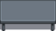
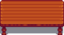
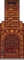
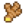
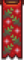

Meubles
- Pour les papiers peints, voir papier peint.
- Pour les revêtements de sol, voir revêtement de sol.
- Pour les objets décoratifs fabriqués, voir fabrication.
Les meubles peuvent être achetés chez Robine à la scierie ou chez le marchand du chariot de voyage. Les deux magasins proposent une sélection aléatoire de meubles chaque jour de leur ouverture. Le prix des meubles au chariot de voyage sont aléatoires, mais c'est toujours entre  250–2 500po. Les prix à la scierie ne changent pas.
250–2 500po. Les prix à la scierie ne changent pas.
Certains meubles ne peuvent être obtenus que par le biais des donations au musée, achats aux festivals, au casino, au marché Joja ou d'autres sources uniques. Ces exceptions sont répertoriées dans les tableaux ci-dessous.
Après la première amélioration de la maison de ferme, Robine met en vente le catalogue de fournitures à la scierie. Un fois placé, vous pouvez l'utiliser pour acheter les meubles de façon illimitée et gratuite.
La plupart des meubles peuvent être placés à l'extérieur.[1]. Cependant, certains articles ne peuvent pas être placés ailleurs qu'à l'intérieur de la Maison de ferme ou d'un Cabanon. Les meubles afficheront un carré vert sur les carreaux où ils peuvent être placés. Le carré deviendra rouge si les meubles ne peuvent pas être placés. Remarque : Les objets placés à l'extérieur de la ferme seront détruits si un villageois traverse la place où il est placé. La page Fabrication affiche des cartes créées par les joueurs qui indiquent quels carrés sont à l'abri du passage des villageois.
Les joueurs peuvent s'asseoir sur des chaises, des bancs, des canapés et des fauteuils.
Les meubles ne peuvent pas être vendus dans la caisse d'expédition ou à tout autre marchand/magasin dans la ville.
Les contrôles
- PC:
 Clique-droit sur le meuble alors qu'il est sélectionné, le fera pivoter ou le placera, selon l'objet. Certains meubles peuvent être facilement ramassés et déplacés par
Clique-droit sur le meuble alors qu'il est sélectionné, le fera pivoter ou le placera, selon l'objet. Certains meubles peuvent être facilement ramassés et déplacés par  clique-gauche ; d'autres meubles nécessitent que le joueur utilise un outil ou qu'il maintienne le clic gauche pour le retirer une fois qu'il est placé.
clique-gauche ; d'autres meubles nécessitent que le joueur utilise un outil ou qu'il maintienne le clic gauche pour le retirer une fois qu'il est placé. - Nintendo Switch: Utilisez le
 bouton A pour faire pivoter les meubles.
bouton A pour faire pivoter les meubles.
Chaises
La Chaise en cristal ne peut pas être achetée; elle peut être obtenue uniquement en donnant 41 minéraux au musée. La Chaise tropicale est uniquement disponible auprès du Commerçant insulaire contre 1 Poisson-papillon.
Toutes les autres chaises listées ci-dessous peuvent être achetées au chariot de voyage pour  250–2 500po, ou avec le catalogue de fournitures pour
250–2 500po, ou avec le catalogue de fournitures pour  0po.
0po.
Les chaises peuvent être placées à l'extérieur.
|
|
|
Bancs
Touts les bancs listés ci-dessous peuvent être achetés au chariot de voyage pour  250–2 500po, ou avec le catalogue de fournitures pour
250–2 500po, ou avec le catalogue de fournitures pour  0po.
0po.
Les bancs peuvent être placés à l'extérieur.
| Objet | Prix |
|---|---|
Canapés et Fauteuils
Tous les canapés et fauteuils listés ci-dessous peuvent être achetés avec le catalogue de fournitures pour  0po. La plupart peuvent être achetés au chariot de voyage pour
0po. La plupart peuvent être achetés au chariot de voyage pour  250–2 500po, à l'exception du
250–2 500po, à l'exception du  Grand canapé marron, qui peut être acheté à l'Oasis pour
Grand canapé marron, qui peut être acheté à l'Oasis pour  3 000po les dimanches.
3 000po les dimanches.
Les canapés et les fauteuils ne peuvent pas être placés à l'extérieur.
|
|
Tables
Toutes les tables listées ci-dessous peuvent être achetées au chariot de voyage pour  250–2 500po, ou avec le catalogue de fournitures pour
250–2 500po, ou avec le catalogue de fournitures pour  0po.
0po.
Les tables peuvent être utilisées pour poser des éléments. Tout en tenant un élément, faites un clic droit sur la table pour le poser. Pour les grandes tables, vous devez vous tenir près du centre de la table pour poser un élément dessus, sinon vous prendrez la table à la place.
Les tables peuvent être placées à l'extérieur.
|
|
|
Longues tables
Toutes les longues tables listées ci-dessous peuvent être achetées au chariot de voyage pour  250–2 500po, ou avec le catalogue de fournitures pour
250–2 500po, ou avec le catalogue de fournitures pour  0po.
0po.
La Table de salle à manger d'hiver peut être achetée au Festival des Glaces, et la Table de salle à manger festive à la Fête de l'Étoile Hivernale.
Les longues tables peuvent être placées à l'extérieur.
| Objet | Prix | Autre Prix |
|---|---|---|
|  Table de salle à manger moderne | N/A | |
|  Table de salle à manger en acajou | N/A | |
Bibliothèques et Commodes
Toutes les bibliothèques et commodes listées ci-dessous peuvent être achetées au chariot de voyage pour  250–2 500po, ou avec le catalogue de fournitures pour
250–2 500po, ou avec le catalogue de fournitures pour  0po.
0po.
Les commodes peuvent être utilisées pour ranger des Vêtements, des Chapeaux, des Chaussures et des Anneaux.
Les bibliothèques et les commodes ne peuvent pas être placées à l'extérieur.
|
|
Cheminées
Les cheminées ne s'achètent jamais au chariot de voyage. Elles sont disponibles à la scierie, chez Krobus, au marché nocturne et avec le catalogue de fournitures pour  0po.
0po.
Une fois placée, un clic droit sur la cheminée allumera ou éteindra le feu.
Les cheminées ne peuvent pas être placées à l'extérieur.
| Objet | Prix | Autre |
|---|---|---|
|  Cheminée en brique | Catalogue de fournitures | |
| N/A |
| |
| N/A | Marché nocturne pour | |
| Cheminée monstre | N/A | |
| Catalogue de fournitures | ||
| Ferme de l'île |
Tapis
Seuls le tapis noir, le tapis à carreaux, le tapis océanique et le tapis rouge sont vendus au chariot de voyage. Le prix varie entre  250–2 500po.
250–2 500po.
Le Tapis moderne peut être acheté à la Danse des Méduses Clair de Lune, le Tapis branché à la Fête des Esprits, le Tapis de glace au Festival des Glaces, le Grand tapis rouge à la Fête de l'Étoile Hivernale, et le Tapis vert clair est aléatoirement disponible au Grand Festival de Stardew Valley. Tous ces éléments sont disponibles dans le catalogue de fournitures.
Le tapis vert rustique, le tapis monstre, tapis mystique, tapis rouge rustique, Tapis d'os, Tapis de fleurs et le Tapis neigeux sont vendus uniquement dans le catalogue de fournitures pour  0po.
0po.
Le Tapis de salade de fruits et le Tapis de pirate ne sont disponibles que via l'événement de 14 coeurs de Penny.
Les Séparateurs de sol ne sont disponibles qu'à partir du catalogue de fournitures.
Les tapis ne peuvent pas être placés à l'extérieur.
|
|


Lampes et Fenêtres
Aucune fenêtre n'est vendue dans le chariot de voyage. La lampe à bougie et la lampe ornée ne sont pas non plus vendues au chariot de voyage. Toutes les lampes listées ci-dessous peuvent être achetées au chariot de voyage pour  250–2 500po.
250–2 500po.
La Fenêtre à rideaux peut être achetée à la Fête de l'Étoile Hivernale.
Tous les objets listés ci-dessous peuvent être achetés via le catalogue de fournitures pour  0po.
0po.
Les lampes et les fenêtres ne peuvent pas être placées à l'extérieur.
|
|
Télévisions
Toutes les télévisions listées ci-dessous peuvent être achetées via le catalogue de fournitures pour  0po. Elles ne sont pas vendues au chariot de voyage.
0po. Elles ne sont pas vendues au chariot de voyage.
La télé cathodique vient avec la ferme standard et la petite télé cathodique vient avec toutes les autres fermes.
Les télévisions ne peuvent pas être placées à l'extérieur.
| Objet | Prix | |
|---|---|---|
| N/A | ||
| N/A | ||
| N/A | ||
| N/A |
Lits
Les lits sont de deux types: lits pour enfants et lits pour adultes. Les joueurs ne peuvent dormir que dans des lits pour adultes.
Actuellement, il n'y a qu'un seul lit enfant.
Les lits ne peuvent pas être placés à l'extérieur et ne peuvent être placés que dans un espace habitable (par exemple, un Cabanon).
| Objet | Source | Prix |
|---|---|---|
| Lit d’enfant | Scierie | |
| Lit | Scierie | |
| Lit double | Scierie | |
| Lit double rouge de luxe | Scierie Uniquement disponible après avoir terminé "Le projet de Robine" |
|
| Poissonnerie | ||
| N/A | ||
| Lit double étoilé | ||
| N/A | ||
| Lit double fraise | ||
| N/A | ||
|  Gingembre (20) | ||
Plantes décoratives
Plantes d'intérieur
Chacune des 15 Plantes d'intérieur peuvent être achetées à la scierie pour  250po, au chariot de voyage pour
250po, au chariot de voyage pour  250–2 500po, ou via le catalogue de fournitures pour
250–2 500po, ou via le catalogue de fournitures pour  0po.
0po.
Les plantes d'intérieur peuvent être placées à l'extérieur.
| Plantes d'intérieur | ||||||||||||||
|---|---|---|---|---|---|---|---|---|---|---|---|---|---|---|
Plantes décoratives autoportantes
Les tournesols séchés peuvent seulement être achetés lors du Grand Festival de Stardew Valley. L'Arbre de luxe, l'Arbre exotique, le Grand cactus, et le Grand palmier ne peut être obtenus que dans le Jeu de la Machine à pince à l'intérieur du cinéma. Tous les autres objets listés ci-dessous peuvent être achetés via le catalogue de fournitures pour  0po.
0po.
Les plantes décoratives autoportantes peuvent être placées à l'extérieur.
|
|
Plantes suspendues décoratives
Le Panier suspendu d’intérieurs ne peut être obtenu que dans le Jeu de la Machine à pince à l'intérieur du cinéma. L'Ornement mural en feuille de palmier ne peut être obtenu que chez le Commerçant insulaire contre 1 Ananas. La Corbeille murale ne peut être obtenu qu'en pêchant dans l'étang de la Forêt secrète.
Tous les autres objets listés ci-dessous peuvent être achetés via le catalogue de fournitures pour  0po.
0po.
Les plantes suspendues au mur ne peuvent pas être placées à l'extérieur.
| Objet | Source | Prix |
|---|---|---|
| Scierie | ||
| |
Fête Hawaïenne | |
| |
Fête Hawaïenne | |
| Cinéma à la Machine à pince | ||
| Scierie | ||
| Commerçant insulaire | ||
| Danse des Fleurs | ||
| Pêche dans l'étang de la Forêt secrète | ||
| Oasis | ||
| Danse des Fleurs | ||
| Fête Hawaïenne |
Plantes saisonnières
Les 6 Plante saisonnière peuvent être achetées sur le Bateau de décoration au marché nocturne pour  500po chacune. Les plantes saisonnières ne sont pas obtenables avec le chariot de voyage et le catalogue de fournitures. Un fois placées, les plantes changent d'apparences en fonction de la saison.
500po chacune. Les plantes saisonnières ne sont pas obtenables avec le chariot de voyage et le catalogue de fournitures. Un fois placées, les plantes changent d'apparences en fonction de la saison.
Les plantes saisonnières peuvent être placées à l'extérieur.
| Apparance au printemps |
Apparance en été |
Apparance en automne |
Apparance en hiver |
Aussi vendu par | Prix |
|---|---|---|---|---|---|
| Pierre à la Fête des Oeufs | |||||
| Pierre à la Fête des Oeufs | |||||
| Pierre pendant la Danse des Fleurs | |||||
| Sandy dans l'oasis | |||||
| Robine dans la scierie | |||||
| Pierre pendant la Danse des Fleurs |
Peintures & Tableaux
Huit peintures ("Une Nuit sur la colline", "Les collines de jade", "Offrande au feu", Ma première peinture, « Bateau », Tableau imprimé végétal, « Physique de base » et « Paysage ») ne sont pas obtenables via le catalogue de fournitures. Toutes les autres peintures listées ci-dessous (à l’exception des tableaux du marché nocturne) peuvent être achetées via le catalogue de fournitures pour  0po.
0po.
"Une Nuit sur la colline" et "Les collines de jade" ne peuvent être obtenues que par le biais de dons au musée. Le tableau "Offrande au feu" peut être obtenu par le biais de donation au musée ou acheté au casino avec  Pièces Qi. Ma première peinture peut être obtenue dans l'événement de 14 coeurs de Leah.
Pièces Qi. Ma première peinture peut être obtenue dans l'événement de 14 coeurs de Leah.
« Bateau » peut être pêché à l'endroit sud-ouest de la ferme si la Ferme de plage a été sélectionnée. Le Tableau imprimé végétal peut être pêché dans la rivière au nord-ouest de l'Île Gingembre. « Physique de base » peut être pêché au sommet du Donjon du volcan. « Paysage » peut être pêché dans l'étang à l'extérieur du Spa.
Les peintures & tableaux ne peuvent pas être placées à l'extérieur.
|
|
Position des petites peintures
Notez que certaines petites peintures sont plus hautes ou plus basses que d’autres.

Peintures du marché nocturne
Le célèbre peintre Lupini vend différentes peintures chaques jours du marché nocturne pour  1 200po. Les peintures tournent sur un calendrier de 3 ans, pour un total de 9 peintures.
1 200po. Les peintures tournent sur un calendrier de 3 ans, pour un total de 9 peintures.
| Objet | Jour | Années | Prix |
|---|---|---|---|
| Hiver 15 | 1, 4, 7, etc. | ||
| Hiver 16 | 1, 4, 7, etc. | ||
| Hiver 17 | 1, 4, 7, etc. | ||
| Hiver 15 | 2, 5, 8, etc. | ||
| Hiver 16 | 2, 5, 8, etc. | ||
| Hiver 17 | 2, 5, 8, etc. | ||
| Hiver 15 | 3, 6, 9, etc. | ||
| Hiver 16 | 3, 6, 9, etc. | ||
| Hiver 17 | 3, 6, 9, etc. |
Affiches de films
Les affiches de films peuvent être obtenues en jouant au Jeu de la Machine à pince à l'intérieur du Cinéma. Chaque affiche apparaît aléatoirement dans le mini-jeu lorsque le film correspondant se joue au cinéma.
Les affiches de cinéma ne peuvent pas être placées à l'extérieur.
Bannières
La Bannière de nuages est la seule bannière disponible dans le catalogue de fournitures.
Les bannières ne peuvent pas être placées à l'extérieur.
| Objet | Source | Prix |
|---|---|---|
| Bateau de décoration au Marché nocturne | ||
| Festival des Glaces | ||
| Danse des Méduses Clair de Lune | ||
| Bannière de couleur pastel | Fête des Oeufs | |
|  Bannière hivernale | Fête de l'Étoile Hivernale |
Suspensions murales
Le Enseigne murale lumineuse J.Cola est vendu au Marché Joja au lieu de la Scierie.
Les suspensions suivantes ne peuvent être obtenues qu'en jouant au Jeu de la Machine à pince dans le Cinéma : Panier suspendu d’intérieurs, Petite citrouille murale, Citrouille murale, et Autocollant d’arbre hivernal.
Les suspensions suivantes peuvent être obtenues que durant l'événement de 14 coeurs de Penny : Autocollant de ciel nocturne 1, Autocollant de ciel nocturne 2, Autocollant de ciel nocturne 3, Drapeau pirate, et Autocollant de fraise.
La Bouée de sauvetage ne peut être trouvée qu'en pêchant dans l'arrière-boutique de la Poissonnerie de Willy. La Décoration de pyramide ne peut être trouvée qu'en pêchant dans l'étang sud du désert de Calico.
Les suspensions murales ne peuvent pas être placées à l'extérieur.
|
|
Aquariums
Tous les aquariums à l'exception du Sanctuaire aquatique peuvent être achetés auprès de Willy à la Poissonnerie ou du catalogue de fournitures pour  0po.
0po.
Le Grand aquarium de luxe est offert en récompense par Willy pour la Commande spéciale de poisson tropical, après cela il est disponible à la Poissonnerie et le catalogue de fournitures.
Le Sanctuaire aquatique ne peut être acheté que dans Chambre des noix de Monsieur Qi pour  20 gemmes de Qi. Il n'est pas disponible dans le catalogue de fournitures.
20 gemmes de Qi. Il n'est pas disponible dans le catalogue de fournitures.
Les aquariums ne peuvent pas être placés à l'extérieur.
FlambeauxLes flambeaux peuvent être placées à l'extérieur.
DiversTous les objets divers listés ci-dessous excepté la Poubelle décorative peuvent être achetés au Chariot de voyage pour L'Ours en peluche peut également être gagné dans le Jeu de la Machine à pince dans le cinéma. Le Totem peut également être acheté pour Tous les éléments illustrés ci-dessous, à l'exception du Vaisselier et du Tuyau industriel, peuvent être placés à l'extérieur.
Autres décorationsLes éléments suivants ne sont jamais vendus à la Scierie, au Chariot de voyage ou par le biais du Catalogue de fournitures. Les éléments illustrés ci-dessous peuvent être placés à l'extérieur
SpéciauxLes objets suivants ne sont jamais vendus dans le chariot de voyage et dans le catalogue de fournitures. À part la bûche simple et le Rondin, aucun des objets listés ci-dessous n'est vendu à la scierie. La plupart des objets suivants peuvent être placés partout dans Stardew Valley : dans les bâtiments de ferme, à l'extérieur de la ferme, dans les maisons des villageois, à n'importe quel endroit en dehors de la ferme. Les objets placés en dehors de la ferme peuvent être détruits s'ils se trouvent sur la route d'un Villageois. La page de Fabrication montre une carte du monde créée par les joueurs qui vous indique quels endroits sont protégés du passage des Villageois.
Catalogue de fournitures
Meubles de fermeDessous sont listés tous les meubles venant avec la Maison de ferme dans chaque Carte de la ferme. En Multijoueur, la cheminée est remplacée par un coffre qui contient l'inventaire du joueur lorsque celui-ci est absent de la partie. Sinon, tous les meubles ci-dessous sont fournis avec chaque Cabane.
Références
Historique
|
||||||||||||||||||||||||||||||||||||||||||||||||||||||||||||||||||||||||||||||||||||||||||||||||||||||||||||||||||||||||||||||||||||||||||||||||||||||||||||||||||||||||||||||||||||||||||||||||||||||||||||||||||||||||||||||||||||||||||||||||||||||||||||||||||||||||||||||||||||||||||||||||||||